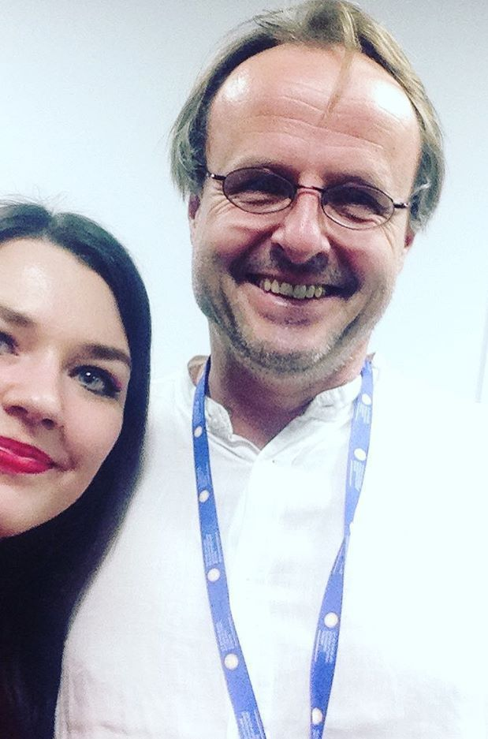

<section class="content">
	<div class="content__wrap">
		<div class="content__photo">
			
		</div>
		<div class="content__block">
			<div class="content__title" id="aboutTitle">Let me introduce myself</div>
    		<p class="content__text" id="aboutText">It is accepted that a designer and a web-developer are two different specialties, but I think that a good UX-specialist should know the basics of programming, should be able to analyze and must constantly develop. That it is very inspiring to work! Now I would like to work in a long-term project with interesting tasks.</p>
    		<p class="content__text"><span id="aboutText2">Please, contact me for any information relevant to my resume. </span><a id="aboutText3" target="_blank" href="https://t.me/irinaoxymoron">Telegram</a>.</p>
		</div>
	</div>
</section>